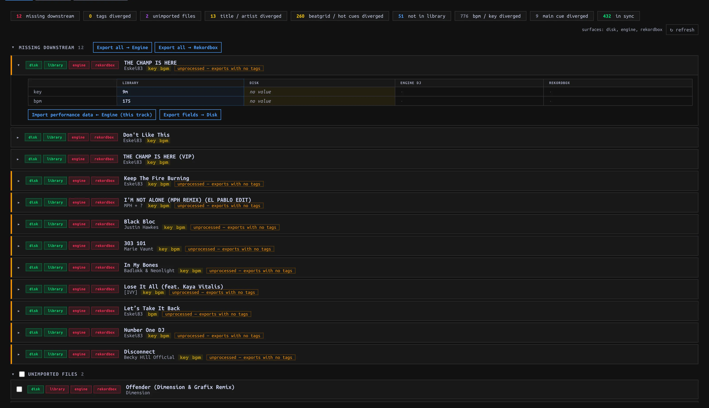

Compare and Sync libraries
Read Sync status, choose imports, and distinguish additive exports from replacements.
On this page

Inspect before choosing a direction
Open SYNC → Tracks and press ↻ refresh to update status. The inbox groups Missing downstream, Tags diverged, Unimported files, Title / artist diverged, Beatgrid / hot cues diverged, Not in Library, BPM / key diverged, and Main cue diverged. Some groups start collapsed. Each Track is filed under one highest-priority group; count chips can also list all Tracks with a particular condition. An unavailable external library is unknown, not proof that its Tracks are missing.
Expand a Track to compare Library / Disk / Engine DJ / Rekordbox values. The matrix’s ← import reads a value into manaDJ; an export arrow writes out. ⚠ warns when an empty Library value would be skipped by Export. Visual diff overlays performance data. This status matrix is a comparison, not a dry-run plan for every action: read the scope/confirmation before proceeding.

Choose the import operation
| Need | Control | Effect / scope |
|---|---|---|
| Add audio found in your configured directory | Unimported files → select rows → Import N selected → Apply | Rescans the directory and creates only selected new Library Tracks; audio remains in place. |
| Bring in Rekordbox-only Tracks | Not in Library → Import all ← Rekordbox → Apply | All Rekordbox-only Tracks, not selected rows. Engine-only rows do not have the same import action here. For a previewed first-time import with Tag/Playlist choices, use Rekordbox import instead. |
| Take a field changed elsewhere | Expand the Track, click the field’s ← import | Title, artist, BPM, Key and Energy imports can apply immediately, not after a whole-page Save. Read the source column first. |
| Fill missing performance data from Engine | Import performance data ← Engine (section, Track or Library scope) | First call immediately fills blanks (e.g. missing cues/grid/Main cue/Key). It then lists saved values that differ for explicit overwrites. Dismissing that panel does not undo blanks already filled. |
For Engine performance conflicts, uncheck fields you do not want overwritten in the returned panel. For Hot Cues, fill empty slots keeps occupied Library slots; replace all replaces the set. Apply N overwrites authorizes only the listed Track/field pairs. Per-cell ← fill empty slots and ← import can apply immediately; replacement of existing grid or Cue presents a scope confirmation. Check the affected Track afterward. Manual Analyze is another overwrite path, independent of Sync.
External writes
Settings → Library → Export to Rekordbox / Engine DJ starts off. Enable it deliberately to expose external-library write controls. Imports work with Export disabled. Export fields → Disk is a separate write to the audio file’s tags (title/artist/BPM/Key), not to Rekordbox or Engine DJ: the external-library Export gate does not protect Disk writes, and the per-row action has no Apply bar. Do not use it to test read-only Sync.
| Export action | Write behavior |
|---|---|
| Missing downstream → Export all → Engine / Rekordbox | Whole missing scope, confirmed with Apply / Cancel, not row selection. Creates missing external Tracks. Close the target app first; Engine export can skip Tracks whose drive has no owning Engine library. This is not the same as exporting performance fields. |
| Tags diverged → Export tags → Engine / Rekordbox | Whole Library, not just the shown count, with Apply confirmation. Encodes Tag structure/assignments and Energy into each target’s supported representation. Rebuild Engine tag tree deletes/recreates the generated tag playlists; use only when intended. |
| Export new performance data → Rekordbox | Additive: fills vacant Hot Cue slots and missing Key; does not auto-export a Beatgrid. |
| replace in RB →, replace grid in RB →, Key export → | Explicit replacement with Apply confirmation. Replacing cues reconciles Hot and memory cue mirrors including moves/deletions; replacing a grid rewrites Rekordbox analysis grid/BPM. Quit Rekordbox first. |
Export routes check the gate; external writes can snapshot external databases, but a snapshot is not an undo button. Verify the selected target, operation and scope rather than relying on a later restore.
Playlists are a separate Sync
Open SYNC → Playlists, select a Playlist and compare the three ordered columns. With Export off, Import from: Engine DJ / Rekordbox targets manaDJ; with Export on, Sync from: a chosen source writes its order/membership to other available libraries. This replaces a target Playlist’s order/membership, not merely adding missing entries. Unmatched Tracks can stop a write; do not assume the detail view gives a dry-run or preflight confirmation of all unmatched Tracks.
For a manaDJ Playlist, Export all data (when Export is enabled) opens a FULL PLAYLIST EXPORT preview. Choose destinations separately; both start selected. Read per-destination create/replace, added/removed/moved and unmatched counts, then confirm. This operation replaces Playlist order and performance/metadata fields for matched Tracks—Hot Cues, Beatgrid, Key, Main cue, Tags and Energy. The preview is a Playlist plan, not a field-by-field preview. Quit target applications before writing and inspect the result, including skipped or failed rows.